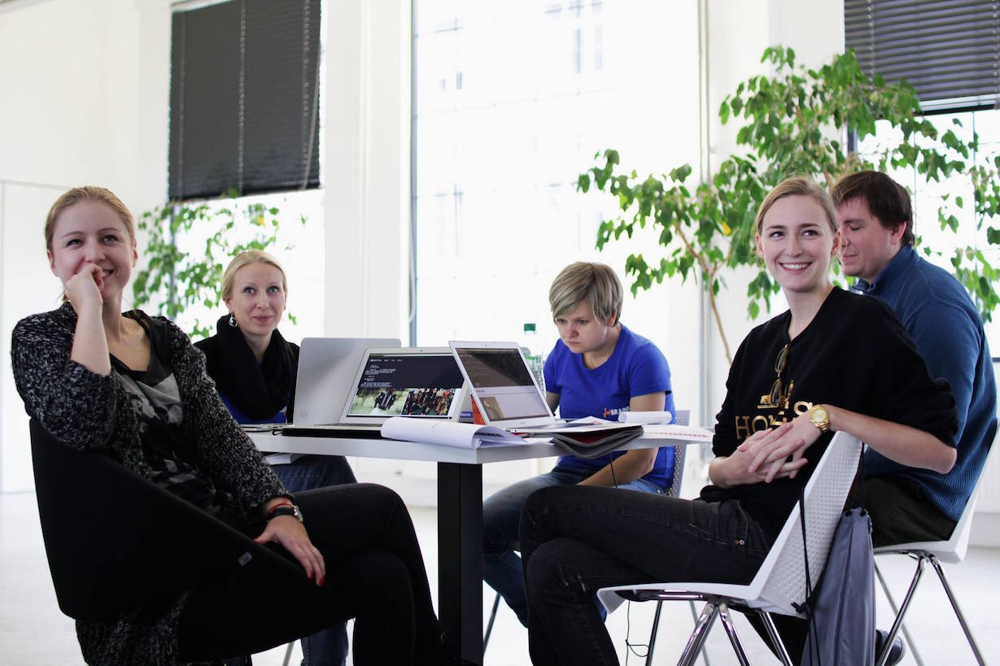
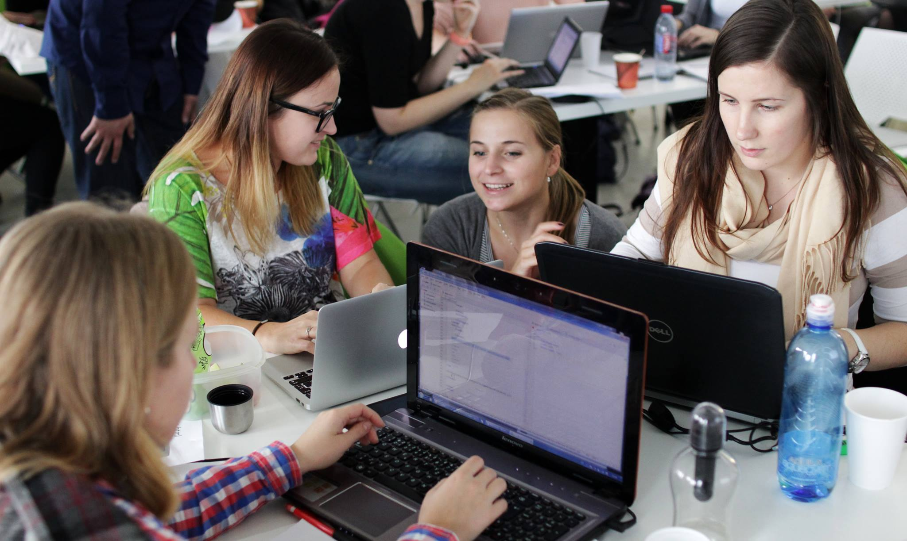
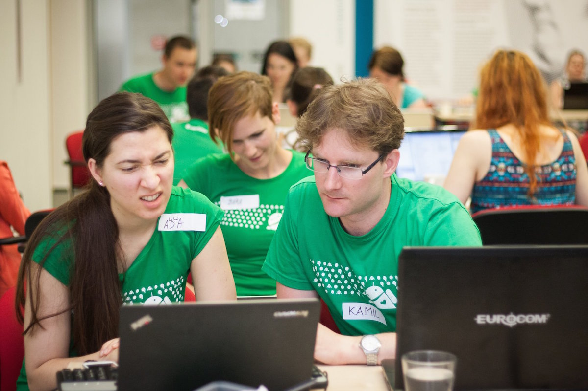
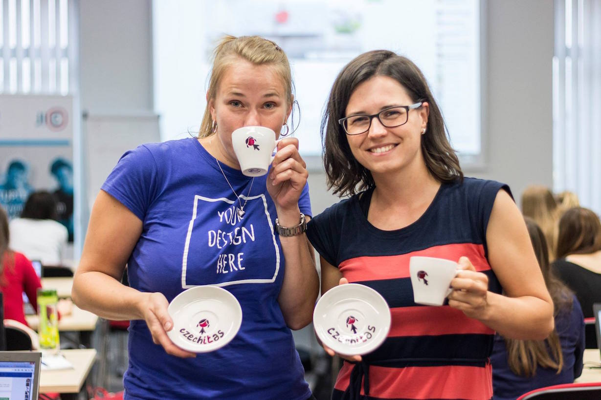
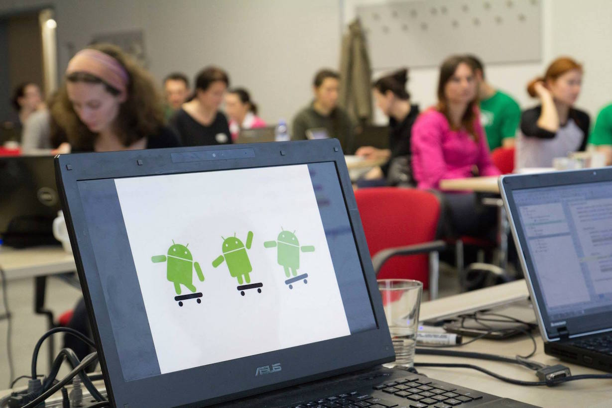

24. 8. 2015 pondělí - Impact Hub / ČVUT
9:00 - 10:00 Otevři oči s Czechitas: zahájení a úvodní slovo partnerů Impact Hub
10:00 - 11:45 Hrátky s HTML a s CSS
11:45 - 12:45 Oběd a přesun na ČVUT
13:00 - 13:10 Uvítání slovem rektora ČVUT
13:10 - 14:00 Layoutování pomocí HTML a CSS
14:00 - 15:00 Vysvětlení práce na projektu a inspirativní weby, představení vývojového prostředí
15:00 - 18:00 Práce na projektu ve skupinkách
18:00 - 18:30 Večeře
18:30 - 21:00 Kreslení: nácvik na návrh loga
21:00 Přesun na koleje a noční klid :-)
25. 8. 2015 úterý - ČVUT
8:30 - 9:15 Otevři oči s Danielou Liškovou a nahlédni do zákulisí vývojového oddělení Microsoftu: snídaně a inspirativní přednáška
10:00 - 11:45 Grafický workshop - úprava fotek
11:45 - 12:45 Oběd
12:45 - 15:00 Grafický workshop pokračování - tvorba loga pro web z předchozího dne
15:00 - 15:45 Nahrání hotového webu na internet
16:00 - 18:00 Exkurze do institutu intermédií / Modulární programování (dvě skupinky)
18:00 - 18:30 Večeře
18:30 - 21:00 Microsoft geolokační hra za poznáním Prahy s Windows Phony
21:00 Přesun na koleje a noční klid :-)
26. 8. 2015 středa - ČVUT / Microsoft
8:30 - 9:00 Otevři oči s Evou Dobríkovou, úspěšnou vývojářkou ze Skypu
9:00 - 12:00 Hrátky s lego roboty
12:00 - 13:00 Oběd
13:00 - 16:00 Hrátky s lego roboty
17:00 - 21:00 Xbox Night Academy, exkurze a večer v Microsoftu
21:00 Přesun na koleje a noční klid :-)
27. 8. 2015 čtvrtek - ČVUT
8:30 - 9:00 Otevři oči s Lenkou Čábelovou a poznej, jak se dělá PR v IT společnosti, jako je Microsoft
9:00 - 10:00 Úvod do OOP
10:00 - 11:00 Úvod do algoritmizace - hra na recepty
12:00 - 13:00 Oběd
13:00 - 16:00 WPF/HTML
16:00 - 17:00 Humanoid / 3D tisk
17:00 - 18:00 Vývoj C# aplikace
18:00 - 18:30 Večeře
18:30 - 21:00 Večerní aktivita
21:00 Přesun na koleje a noční klid :-)
28. 8. 2015 pátek - Impact Hub
8:30 - 9:00 Otevři oči s Annikou Gorholt (Konica Minolta)
9:00 - 12:00 Vývoj C# aplikace
12:00 - 13:00 Oběd
13:00 - 17:00 Vývoj C# aplikace
17:00 - 18:00 Večeře
18:30 - 21:00 Večerní aktivita
21:00 Přesun na koleje ČVUT a noční klid :-)
29. 8. 2015 sobota - Impact Hub
9:00 - 18:00 Závěrečný hackaton Konica Minolta. V týmech vytvoříme stránky nebo aplikaci a budeme soutěžit o ceny.





